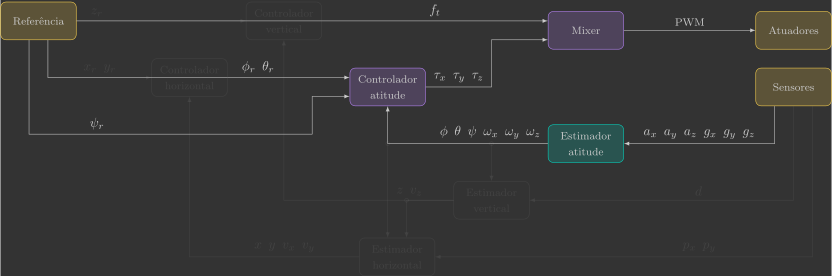
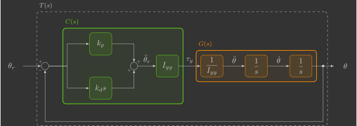
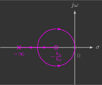
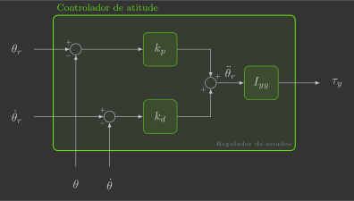

Controlador de atitude
Nesta secção você irá implementar o controlador de atitude, que comanda os torques \(\tau_x\), \(\tau_y\) e \(\tau_z\) a partir da diferença entre os ângulos de Euler de referência \(\phi_r\), \(\theta_r\) e \(\psi_r\) e estimados \(\phi\), \(\theta\) e \(\psi\).

Para isto, será implementada uma nova função:
attitudeController()
Além de uma alteração em uma função já previamente implementada:
reference()
Implementação
Para começar, copie e cole o arquivo attitude_estimator.c e renomeie ele para attitude_controller.c.
Definições
Variáveis globais
Declare mais algumas variáveis globais, que são as referências dos ângulos de Euler que entram na função do controlador de atitude.
// System references
float phi_r, theta_r, psi_r; // Euler angles reference [rad]
Loop principal
Inclua no seu loop principal a chamada da função attitudeController() entre as funções attitudeEstimator() e mixer().
// Main application task
void appMain(void *param)
{
// Infinite loop (runs at 200Hz)
while (true)
{
reference(); // Read reference setpoints (from Crazyflie Client)
sensors(); // Read raw sensor measurements
attitudeEstimator(); // Estimate orientation (roll/pitch/yaw) from IMU sensor
attitudeController(); // Compute desired roll/pitch/yaw torques
mixer(); // Convert desired force/torques into motor PWM
actuators(); // Send commands to motors
vTaskDelay(pdMS_TO_TICKS(5)); // Loop delay (5 ms)
}
}
Funções
Referência
Os ângulos de Euler de referência \(\phi_r\) e \(\theta_r\) serão comandados pelo Command Based Flight Control do Crazyflie Client.

Conforme vimos anteriormente:
- Os botões Up e Down alteram a variável
setpoint.position.zem incrementos de \(0,5\) - Os botões ← e → alteram a variável
setpoint.position.yem incrementos de \(0,5\) - Os botões ↑ e ↓ alteram a variável
setpoint.position.xem incrementos de \(0,5\)
Vamos continuar utilizando os botões Up / Down para comandar a força total \(f_t\) em incrementos de \(0,01\,N\), mas agora os botões ↑ / ↓ e ← / → vão comandar, respectivamente, os ângulos de Euler de referência \(\theta_r\) e \(\phi_r\) em incrementos de \(\frac{\pi}{4} \text{rad}\) (\(45^{\circ}\)). Para tal, precisamos ajustar as escalas da seguinte forma:

Abaixo temos um exemplo de função reference() que faz isso:
// Get reference setpoints from commander module
void reference()
{
// Declare variables that store the most recent setpoint and state from commander
static setpoint_t setpoint;
static state_t state;
// Retrieve the current commanded setpoints and state from commander module
commanderGetSetpoint(&setpoint, &state);
// Extract position references from the received setpoint
ft = (setpoint.position.z * 2.0f) / 100.0f; // Thrust force command [N] (maps 0.5m -> 0.01N)
phi_r = (setpoint.position.y * 2.0f) * pi/4.0f; // Roll reference command [rad] (maps 0.5m -> pi/4 rad)
theta_r = (setpoint.position.y * 2.0f) * pi/4.0f; // Pitch reference command [rad] (maps 0.5m -> pi/4 rad)
psi_r = 0.0f; // Yaw reference command [rad]
}
Controlador de atitude
A função attitudeController() é quem comanda os torques a partir da diferença entre os ângulos de Euler de referência e estimados.
// Compute desired torques
void attitudeController()
{
}
Para projetar um controlador, precisamos de um modelo da planta que será controlada. Já vimos que a dinâmica linearizada de um quadricóptero pode ser representada pelo diagrama de blocos abaixo:

Como a dinâmica de atitude de cada ângulo está desacoplada, é possível controlar cada um deles individualmente. Toda a técnica de controle explorada aqui será realizada para o ângulo de inclinação \(\theta\), e a mesma será replicada depois para os ângulos de rolagem \(\phi\) e guinagem \(\psi\).
A dinâmica de inclinação pode ser representada pelo diagrama de blocos abaixo:
Podemos cancelar o momento de inércia da planta de modo que a variável de controle seja a aceleração angular, conforme abaixo:

Isso reduz o sistema a ser controlado a um integrador duplo. Vamos detalhar três possíveis controladores para um sistema como esse, ficando a seu critério qual utilizar.
O controlador PD combina ações proporcional e derivativa para reagir tanto ao erro quanto à sua variação, oferecendo boa resposta e bom amortecimento. É simples de implementar e eficaz para o integrador duplo, mas sua sensibilidade ao ruído na derivada pode limitar o desempenho.
Definição dos ganhos \(k_p\) e \(k_d\)
O diagrama de blocos acima pode ser representado por uma função de transferência do controlador \(C(s)\) e outra da planta \(G(s)\):

a) Escreva as funções de transferência do controlador \(C(s)\) e da planta $G(s)
b) Determine a função de transferência em malha fechada \(T(s)\)
c) Escreva os ganhos \(k_p\) e \(k_d\) em função da frequência natural \(\omega_n\) e do fator de amortecimento \(\zeta\) do sistema em malha fechada
d) Calcule os ganhos \(k_p\) e \(k_d\) para que a dinâmica de atitude do quadricóptero tenha um tempo de acomodação de \(0,3s\) e uma ultrapassagem percentual de \(0,5\%\)
O controlador proporcional derivativo insere um zero no sistema, assim um dos polos da origem vai até o zero e o outro até menos infinito, conforme o diagrama de lugar das raízes abaixo:

Olhando o controlador isoladamente, temos o seguinte diagrama de blocos:
Que se traduz nas equações abaixo:
Inclua na função attitudeController() duas variáveis locais \(k_p\) e \(k_d\), que correspondem aos ganhos do controlador, e, em seguida, calcule o torque comandado \(\tau_y\) seguindo as equações acima.
// Compute desired torques
void attitudeController()
{
// Controller parameters (settling time of 0.3s and overshoot of 0,05%)
static const float kp =
static const float kd =
// Last error (static to retain value amoung function calls)
static float theta_e_last;
// Compute angular aceleration reference
float theta_e =
float theta_dot_e =
float theta_ddot_r =
float tau_x =
// Update last error for next call
theta_e_last = theta_e;
// Compute desired torque
ty =
}
O controlador P em cascata utiliza duas malhas hierárquicas — uma interna e outra externa — o que melhora a estabilidade e o tempo de resposta. É intuitivo e robusto, mas requer ajuste cuidadoso entre as duas malhas para evitar oscilações.

Definição dos ganhos \(k_p\) e \(k_d\)
O diagrama de blocos acima pode ser representado por duas funções de transferência do controlador \(C_1(s)\) e \(C_2(s)\) e outras duas da planta \(G_1(s)\) e \(G_2(s)\):

a) Escreva as funções de transferência do controlador \(C_1(s)\) e \(C_2(s)\) e da planta \(G_1(s)\) e \(G_2(s)\)
b) Determine a função de transferência em malha fechada \(T_1(s)\)
c) Determine a função de transferência em malha fechada \(T_2(s)\)
d) Escreva os ganhos \(k_p\) e \(k_d\) em função da frequência natural \(\omega_n\) e do fator de amortecimento \(\zeta\) do sistema em malha fechada
e) Calcule os ganhos \(k_p\) e \(k_d\) para que a dinâmica de atitude do quadricóptero tenha um tempo de acomodação de \(0,3s\) e uma ultrapassagem percentual de \(0,5\%\)
O ganho \(k_d\) determina a localização do polo da malha de controle interna:

Já o ganho \(k_p\) determina a localização dos polos da malha de controle externa:

Caso o ganho \(k_d\) seja suficientemente maior (\(>5\times\)) que o ganho \(k_p\) , o polo em \(-k_d\) é desprezível e a malha de controle externa se comporta como um sistema de 1ª ordem cuja constante de tempo é dada apenas pelo polo em \(-k_p\):
A ideia de um controlador em cascata é projetar malhas de controle sucessivamente mais lentas de modo que as malhas internas possam ser aproximadas a um ganho unitário constante. No entanto, é preciso tomar cuidado. Se o ganho da malha de controle interna for muito alto, isso pode gerar saturação dos atuadores.
f) Calcule os ganhos \(k_p\) e \(k_d\) para que o a dinâmica de atitude do quadricóptero tenha um tempo de acomodação de \(0,3s\) e que o polo mais rápido seja desprezível
Olhando o controlador isoladamente, temos o seguinte diagrama de blocos:
Que se traduz nas equações abaixo:
Inclua na função attitudeController() duas variáveis locais \(k_p\) e \(k_d\), que correspondem aos ganhos do controlador, e, em seguida, calcule o torque comandado \(\tau_y\) seguindo as equações acima.
// Compute desired torques
void attitudeController()
{
// Controller parameters (settling time of 0.3s and overshoot of 0,05%)
static const float kp =
static const float kd =
// Compute angular aceleration reference
float theta_dot_r =
float theta_ddot_r =
// Compute desired torque
ty =
}
O regulador de estados realimenta todas as variáveis do sistema e permite posicionar os polos em locais desejados do plano complexo, atendendo diretamente aos requisitos dinâmicos de desempenho. É o mais simples e preciso dos três em termos de sintonia e resposta, mas exige domínio do formalismo de espaço de estados.
Definição dos ganhos \(k_p\) e \(k_d\)
A dinâmica de atitude pode ser representada pelo seguinte sistema de equações diferenciais:
Ou através da representação no espaço dos estados:
Onde:
Um regulador de estados consiste em realimentar todos os estados do sistema simultaneamente ao invés de apenas a saída(1), conforme o diagrama de blocos abaixo:
-
Para fazer uma analogia entre controle por realimentação do estados (controle moderno) e controle por realimentação da saída (controle clássico), vamos considerar um médico tratando um doente com febre alta:
- Se o médico tratar o doente segundo os conceitos de controle clássico, ele vai medir a temperatura do paciente e vai dar um remédio para abaixar a febre quando ela estiver alta e não fazer nada quando a febre estiver baixa.
- Se o médico tratar o doente segundo os conceitos de controle moderno, ele vai examinar o paciente, identificar a causa da febre e dar um remédio para a doença e não para a febre (ou seja, o médico vai tratar a doença eliminando a causa da febre e não somente o sintoma da doença).
O grande problema do controle por realimentação dos estados é exigir que os estados do sistema estejam disponíveis para serem realimentados, ou seja, é necessário medir todos os estados do sistema ou pelo menos estimá-los.
Onde:
Como estamos aplicando um realimentação de estados do tipo:
A dinâmica em malha fechada fica:
a) Determine a matriz de transmissão dos estados em malha fechada \(A_{mf}\)
b) Determine o polinômio característica do sistema em malha fechada \(p(s) = \det \left( sI - A_{mf} \right)\)
c) Escreva os ganhos \(k_p\) e \(k_d\) em função da frequência natural \(\omega_n\) e do fator de amortecimento \(\zeta\) do sistema em malha fechada
d) Calcule os ganhos \(k_p\) e \(k_d\) para que a dinâmica de atitude do quadricóptero tenha um tempo de acomodação de \(0,3s\) e uma ultrapassagem percentual de \(0,5\%\)
Olhando o controlador isoladamente, temos o seguinte diagrama de blocos:

Que se traduz nas equações abaixo:
Inclua na função attitudeController() duas variáveis locais \(k_p\) e \(k_d\), que correspondem aos ganhos do controlador, e, em seguida, calcule o torque comandado \(\tau_y\) seguindo as equações acima(1).
- Como o objetivo é deixar o quadricóptero estacionário, a velocidade angular de referência pode ser assumida como sendo zero.
// Compute desired torques
void attitudeController()
{
// Controller parameters (settling time of 0.3s and overshoot of 0,05%)
static const float kp =
static const float kd =
// Compute angular aceleration reference
float theta_ddot_r =
// Compute desired torque
ty =
}
Note que, ao invés de realimentar os ângulos e velocidades angulares reais, você está realimentando os ângulos e velocidades angulares estimados. Ou seja, você está supondo que o estimador de atitude desenvolvido anteriormente é perfeito. Isso é chamado de "observed-based control" e é um método muito típico para estruturar sistemas de controle.
Validação
Para validar o seu controlador você irá realizar dois experimentos. Em ambos os experimentos você deve colocar um pequeno valor de força de empuxo \(f_t\).
Controle de um grau de liberdade
O primeiro experimento consiste em controlar o drone em apenas um grau de liberdade. Você irá utilizar um dispositivo criado especificamente para isso, que restringe todos os graus de liberdade do drone deixando apenas o ângulo de inclinação \(\theta\) livre.

Para testar o controlador você pode aplicar distúrbios no quadricóptero (dando um "tapinha" na parta inferior de seus motores) e verificar se o mesmo retorna ao ângulo de referência \(\theta_r=0^{\circ}\). Você pode também alterar o ângulo de referência para, por exemplo, \(\theta_r=45^{\circ}\), através do Crazyflie Client, e ver se o quadricoptero se inclina sozinho.
Controle de três graus de liberdade
O outro experimento consiste em controlar o drone em três graus de liberdade. No entanto, como os módulos dos controladores vertical e horizontal ainda não foram implementados, você irá realizar isso através de uma queda livre controlada.
Altere a função attitudeController() de modo que ela comande não só o torque \(\tau_y\) como também os torques \(\tau_x\) e \(\tau_z\)(1).
- Por conta da simetria do drone, você deve utilizar os mesmos ganhos \(k_p\) e \(k_d\) para o ângulo de rolagem \(\phi\) e inclinação \(\theta\). No entanto, para o ângulo de guinagem \(\psi\), recomenda-se utilizar um ganho \(k_p\) 4x menor e um ganho \(k_d\) 2x menor, que corresponde à mesma ultrapassagem percentual de \(0,5\%\) mas a um tempo de acomodação 2x maior (\(0,3s \rightarrow 0,6s\)).
// Compute desired torques
void attitudeController()
{
// Controller parameters (settling time of 0.3s and overshoot of 0,05%)
static const float kp =
static const float kd =
// Compute angular acelerations references
float phi_ddot_r =
float theta_ddot_r =
float psi_ddot_r =
// Compute desired torques
tx =
ty =
tz =
}
Segure o quadricóptero a uma distância de aproximadamente \(50\text{cm}\) do chão e, assim que os motores começarem a girar, solte ele. Ele deverá cair devagar (comparado a uma queda livre) e sem rotacionar em torno de nenhum eixo.